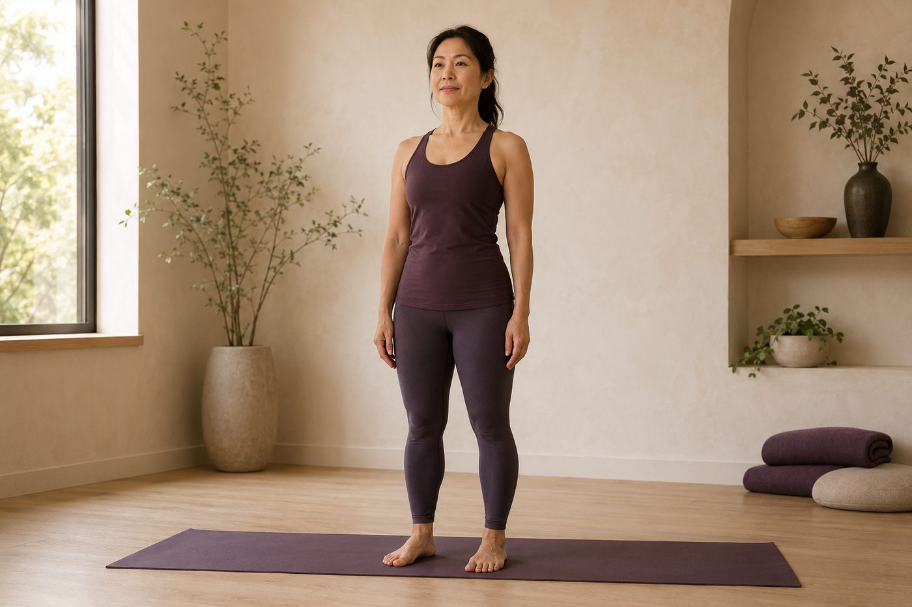

山式到戰士式、三角式，站姿的支撐怎麼變？
山式時你站得好好的，一跨到戰士式，前腳開始抓地，後腳卻像沒跟上。到了三角式，手愈想摸地面，反而愈難留意兩腳在做什麼。
站姿瑜伽從山式到戰士式、三角式時，站距、腳的方向與軀幹位置改變，兩腳承重也會跟著變。可先比較三種站姿，留意重量往哪裡移及呼吸能否維持自然。牆面或瑜伽磚可以提供支撐，無須為了對齊外觀而硬撐或忍痛。

三種站姿的支撐有什麼不同？
山式可先感覺雙腳怎麼接地，戰士式加入前後站距，三角式則可觀察軀幹傾斜時重量怎麼移動。想弄清楚大拇趾根部、小趾根部和腳跟的接觸感，可接著讀腳掌踩穩的三點提示。兩腳的感覺也可能不同。
👆 手機版可左右滑動
| 站姿 | 支撐如何改變 | 可借的支撐 |
|---|---|---|
| 山式 | 雙腳共同支撐，觀察重量偏向哪側。 | 靠近牆面，讓手容易扶到。 |
| 戰士式 | 前後站距改變，前後腳承重也不同。 | 縮短站距，必要時用牆輔助。 |
| 三角式 | 兩腳站開，隨軀幹傾斜觀察重量如何移動。 | 手可放在穩固的瑜伽磚或椅面。 |
站姿做得費力，先改站距還是加支撐？
可以先改一個條件，例如縮短站距，或讓手扶牆、扶穩固的磚，再感受呼吸和站姿有無變化。若雙腳站時已經自在，抬起一腳卻變得很晃，可另看樹式的重心轉移與視線練習。有疼痛就先停下。
常見問題
站姿時雙腳重量要完全平均嗎？
不同站姿的重量分配會不同。可以留意腳底接觸和呼吸是否自在。
三角式一定要碰到地嗎？
不用。可以把幅度做小，或用瑜伽磚、椅面或牆面提供支撐。
記下你最有感的時刻
先記下哪種站姿最費力，以及縮短站距或加支撐之後的感受。
免費約 2 分鐘，免登入、免加 LINE。做完可用 3 天觀察卡整理日常感受。
開始免費體態訊號掃描 →